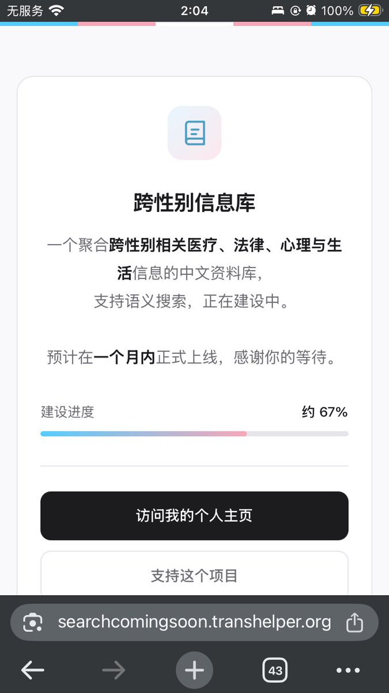
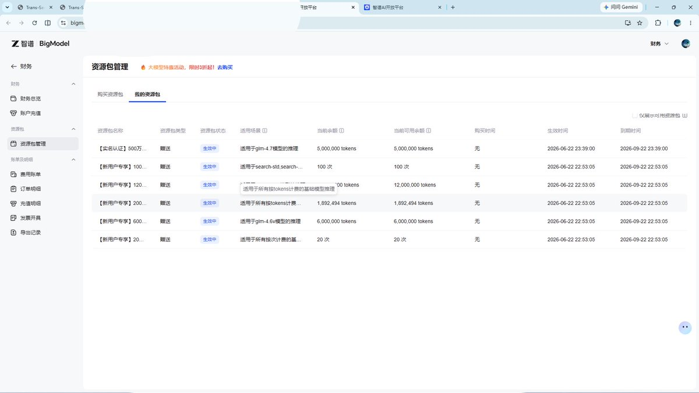

啊，最后一个！！！
更新了 https://t.co/9Gphmu8LGj ，也就是 https://t.co/XQJ4XKWkaa ，开发进度从 20% 变成 67% 了！！！
对了各位，有性价比高的云服务器厂商推荐吗🤔

更新了 https://t.co/9Gphmu8LGj ，也就是 https://t.co/XQJ4XKWkaa ，开发进度从 20% 变成 67% 了！！！
对了各位，有性价比高的云服务器厂商推荐吗🤔


对了，感谢一下智谱 AI，文本模型用的是 GLM-4.7-Flash，向量模型用的 Embedding-3，GLM-4.7-Flash 完全是免费的，Embedding-3 模型能用新用户给的两百万 token，谢谢🫡❤️
我现在唯一的要求就是智谱你千万别倒闭😭🙏🙏 https://t.co/d8quYfCdJN
我现在唯一的要求就是智谱你千万别倒闭😭🙏🙏 https://t.co/d8quYfCdJN